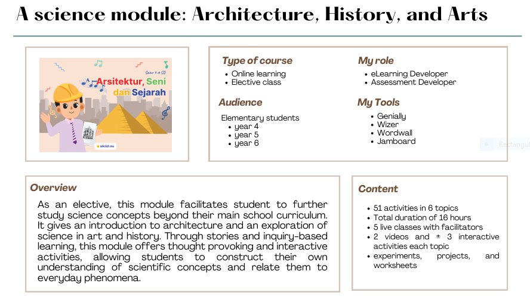
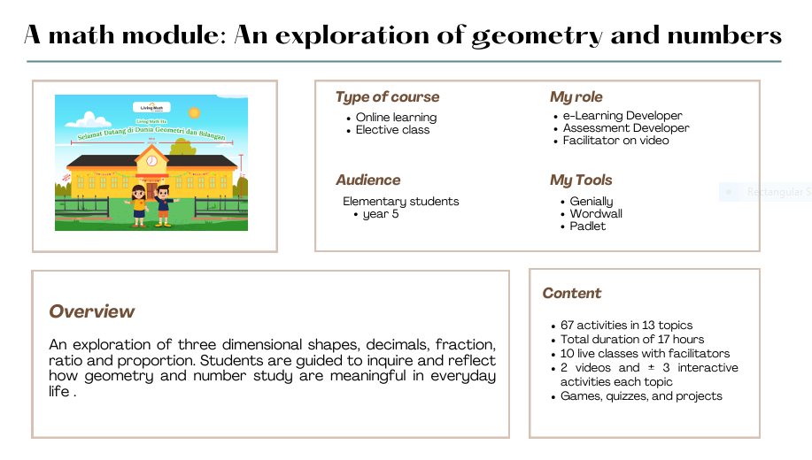
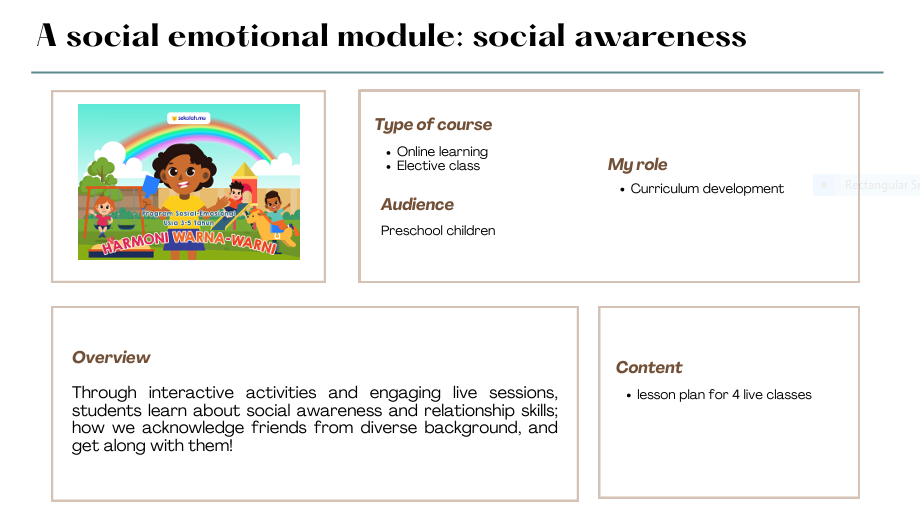
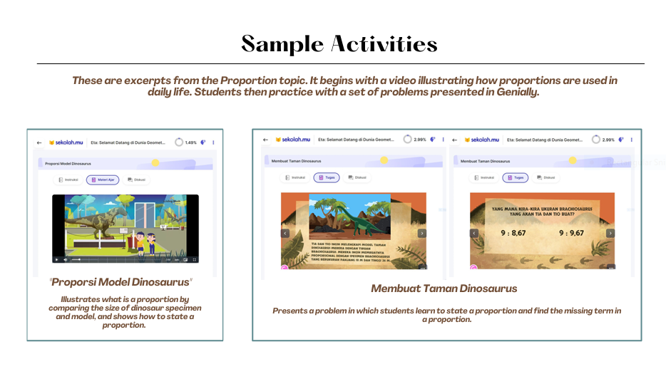
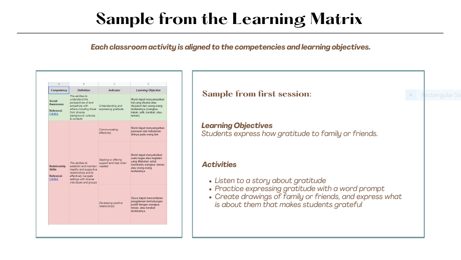

How can inquiry-based learning grounded in real-world contexts develop deeper thinking in Indonesian learners—and what role does blended learning design play in making that work?
From 2021-2022, I worked at Sekolah.mu as Learning Strategist Intern and later as Learning Designer for Maths, English, Science, Motoric Skills, and Social-Emotional Learning modules.
This experience served as an essential foundation for me, giving me access to observe vision-driven learning design, effective collaboration among educators, and positive teacher-student interaction that supported deeper learning.
Coming from 6 years of public school education focused on rote learning and scores, it was fulfilling to create learning experiences that contrasted mine. The fact that this happened during COVID-19 made me realize the importance of innovation mindset and resilience during crises—recognizing valuable learning moments and protecting them even when things aren't good.
As an intern, I was introduced to the learning philosophy: freedom to learn, collaborate, and create. These were later broken down into sub-competencies that had to be mapped to each blended learning module.
My main finding: Inquiry-based learning grounded in real-world contexts helps students move from procedural thinking to transferable understanding.
In blended environments, this happens when: 1) async work introduces questions, not answers, and facilitation deepens thinking, 2) teachers build a positive environment with psychological safety.

Rather than explaining sound waves immediately, students are led to ask: Can we see sound? This is followed by an at-home experiment where students generate evidence, then we formalize the concept together in live class.

Students start with relevance: 'Why do museum models look right?' This anchors abstract proportion work. Open-ended Padlet discussions before live class let students wonder aloud, so facilitators can address misconceptions.

Students are introduced to gratitude by listening to stories, drawing people they care about, and speaking about why. The competency emerges from doing, not being told.
These are excerpts from the Proportion topic. It begins with a video illustrating how proportions are used in daily life. Students then practice with a set of problems presented in Genially.

Interactive proportion problems in Genially

Learning matrix aligning activities to competencies
In each module, asynchronous work does the heavy lifting of asking questions. Videos and interactive activities introduce 'puzzles' students need to solve. Live facilitation then becomes about enabling inquiry—facilitators listen to student thinking, ask follow-up questions, and help students see patterns. This separation allows students thinking time; it prevents facilitators from rushing to answers.
I designed inquiry-based, blended modules emphasizing deeper thinking and real-world relevance. This work taught me that strong pedagogy isn't enough—learning design succeeds or fails based on how well it accounts for real constraints: market positioning, user capacity, and systemic pressures.
Inquiry-based learning doesn't transfer automatically across pedagogical cultures. Indonesian students are trained in procedural, answer-focused learning. Moving them from "I don't know the answer" to "I want to figure this out" requires deliberate scaffolding—not just interesting activities. I learned that designing for inquiry means designing for the teacher's capacity too: What does a facilitator actually do in the moment to enable genuine inquiry rather than just run activities? This became especially complex when designing across age groups (preschool through Year 6), where scaffolding needs change dramatically.
Framed as electives, these modules were received well during COVID but not after. When time constraints and competing priorities became clearer, families made choices based on what they valued most. This taught me hard questions about product-market fit: Does transformative pedagogy need to be framed as core (directly supporting outcomes families care about) rather than enrichment? I also realized I'd built in unvalidated assumptions about access: that families had conducive home environments, could support async work, and valued these competencies. When in-person structure disappeared post-COVID, many couldn't sustain engagement. I'm now asking: Was I designing for a broad market, or for a specific (advantaged) segment without realizing it?
I chose to emphasize inquiry, curiosity, and real-world application based on what I believed mattered. But I designed around systemic pressures (test scores, admissions competition) rather than engaging with them. I'm now questioning: Who decides what competencies matter? Families and schools operate under real stakes I didn't address. How durable are the competencies I designed for? Should they be revisited based on what users actually value, not just what pedagogy says is ideal?